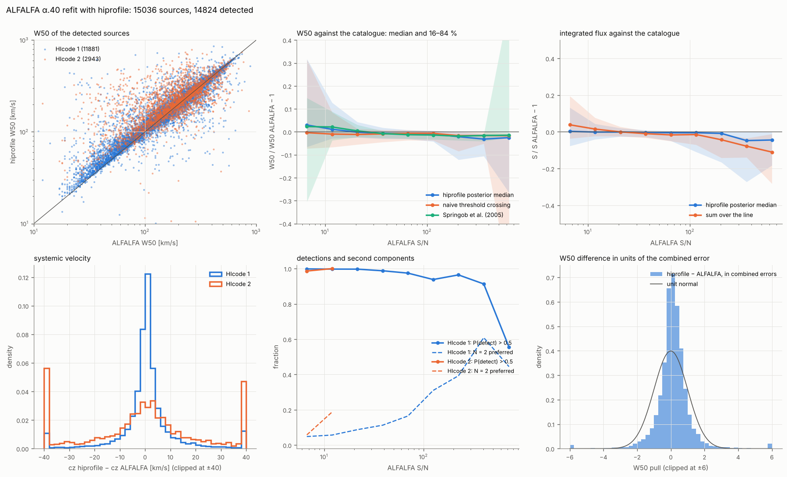
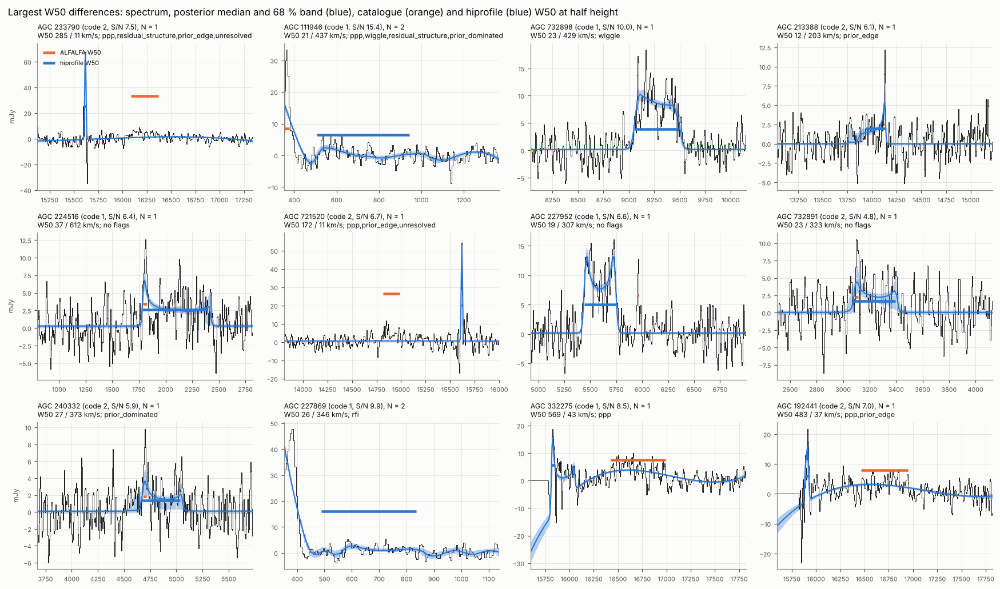

ALFALFA α.40 refitted¶
All 15 041 sources with HIcode 1 or 2 of the ALFALFA α.40 catalogue
(Haynes et al. 2011) were refitted with hiprofile and compared with the
catalogue, source by source. The result is data/alfalfa_a40.csv (one row
per source, columns below) with data/alfalfa_a40_summary.json.
python benchmarks/alfalfa_survey.py fit --out DIR --n 0 --jobs 4
python benchmarks/alfalfa_survey.py compare --out DIR --catalog data/alfalfa_a40.csv --figures docs/img
fit downloads the spectra from NED (Hanning smoothed, baseline
subtracted, 5.2 km/s channels), cuts ±1000 km/s around the catalogue
velocity, and fits them with model.response: boxcar+hanning, N ≤ 2 and
otherwise the default configuration. Fits at 0ba7787 (median 10.6 s per
spectrum on one core, about 44 h of CPU in total), spectrum conversion at
d114eb0; the 120 spectra of the follow-up below were refitted at d053ea5
with the current defaults (symmetric outlier background, negative runs
masked, components contained in the window).
Downloads and fits resume where they stopped.
Data preparation. Three properties of the NED files matter:
- Blanked channels carry a flux of exactly 0 (14 % of the spectra have some in the window, median 22 channels); they are masked.
*****marks a value that overflows its column. In the baseline column it is harmless, in the flux column (over 10 Jy) the channel is masked.- Galactic HI and the high-velocity clouds reach a few hundred km/s and are Jy-bright; the window starts at 350 km/s. 2 sources leave fewer than 64 usable channels and are skipped, 3 have no spectrum in NED.

Results¶
15 036 spectra fitted, none failed; 14 824 detected (P(detect) > 0.5).
| ALFALFA S/N | sources | detected | W50 / catalogue − 1 | naive | Springob | S / catalogue − 1 | Δcz [km/s] |
|---|---|---|---|---|---|---|---|
| 5–6.5 | 2244 | 98.9 % | +4.8 % ± 19 % | +0.3 % ± 17 % | +1.8 % ± 22 % | +0.9 % ± 13 % | +0.4 ± 13.2 |
| 6.5–8 | 3353 | 99.8 % | +2.6 % ± 11 % | −0.5 % ± 10 % | +2.4 % ± 14 % | 0.0 % ± 8 % | +0.3 ± 7.3 |
| 8–12 | 4099 | 99.8 % | +1.5 % ± 6.5 % | −0.8 % ± 5.7 % | +2.6 % ± 6.1 % | 0.0 % ± 4.7 % | +0.6 ± 4.9 |
| 12–20 | 2407 | 99.6 % | +0.5 % ± 3.5 % | −1.1 % ± 3.7 % | +1.3 % ± 3.0 % | −0.2 % ± 2.9 % | +0.4 ± 2.9 |
| 20–50 | 1475 | 99.4 % | −0.5 % ± 2.0 % | −1.1 % ± 2.3 % | −0.4 % ± 1.6 % | −0.2 % ± 1.7 % | +0.5 ± 1.8 |
| > 50 | 501 | 96.0 % | −1.0 % ± 1.8 % | −0.9 % ± 1.7 % | −1.3 % ± 1.1 % | −0.6 % ± 1.5 % | +0.5 ± 1.4 |
Median and robust scatter over the detected sources; "naive" and "Springob" are the classical widths that hiprofile measures on the same spectra around the fitted component (see validation).
- Fluxes and velocities agree with the catalogue to better than 1 % and 1 km/s in the median at every S/N.
- Widths agree to about 1 % from S/N 12. Below, the posterior median is 3–5 % wider than the catalogue, where the naive measurement on the same spectra is not: the shrinkage of faint lines toward the typical width of the prior (see the conditional-bias study in the validation).
- Detection: 99.5 % of the HIcode 1 and 95.0 % of the HIcode 2 sources. The undetected bright sources lie below cz = 350 km/s, behind the Galactic cut.
- The W50 pull (difference over the combined errors) is narrower than a unit normal (robust width ≈ 0.55): both measurements see the same noise, so their difference is smaller than independent errors would make it.
- N = 2 is preferred for 7 % of the HIcode 1 sources, rising to most sources above S/N 300: bright profiles show more structure than the model, or a neighbour is in the window.
- Flags: 20.5 % of the detections;
ppp7.4 %,prior_dominated6.1 %,prior_edge5.5 %,wiggle3.5 %,multimodal2.7 %,residual_structure1.6 %,rfi0.6 %.
Disagreements¶
15 % of the detections differ from the catalogue W50 by more than 30 % (10 % of HIcode 1 and 34 % of HIcode 2 above cz = 1000 km/s), 7.4 % in cz by more than 40 km/s. 39 % of them are flagged, against 17 % of the rest.

The largest differences fall into a few groups:
- A bright neighbour. The catalogue source is a faint, narrow line next to a much brighter galaxy in the same spectrum; with N = 1 the fit describes the bright one (e.g. AGC 227952, 732898). These need the maps the ALFALFA team used; a single spectrum cannot tell which line belongs to the position.
- Strong narrow spikes that the RFI pre-stage leaves unmasked and the fit
takes for the line (AGC 233790, 721520, 181695); mostly flagged
unresolved,ppporprior_edge. - Faint HIcode 2 lines where narrow and wide solutions compete
(
prior_dominated,multimodal), and strongly lopsided profiles where the catalogue measures each horn at half its own height. - Nearby sources (cz < 1000 km/s, 299 detections): N = 2 in 16 % and W50 differences above 30 % in 19 %, from the wing of Galactic HI and from extended, bright galaxies.
A positive profile on a negative baseline¶
Every component is positive by construction (S ≥ 0, f in [0, 1],
|α| ≤ 1, positive kernels), but in 0.4 % of the detections a profile sat on
a baseline more than 5 rms below zero, so that the sum dipped below −3 rms:
the fit reproduced a dip next to strong continuum, or an RFI feature, as
"profile minus baseline". In 0.6 % a component reached the edge of the
window. The RFI pre-stage found these dips (outlier probability ≈ 1) but
kept them, because runs longer than rfi.max_width (20 km/s) are
protected as possible lines. Two changes followed: the protection is now
limited to runs above the pre-stage model, with a symmetric outlier
background, and every profile component must lie entirely inside the window
(priors.contain, see Priors). On the 120 affected spectra
(detected fractions; the last row counts detections):
| before | symmetric RFI pre-stage | and contained | |
|---|---|---|---|
| profile and baseline cancel | 45 % | 21 % | 15 % |
| component at the window edge | 77 % | 53 % | 0 % |
| N = 2 | 73 % | 49 % | 30 % |
| W50 / S / cz off by > 30 % / 30 % / 40 km/s | 53 / 60 / 51 % | 40 / 43 / 34 % | 39 / 36 / 36 % |
| the same for the 96 sources above cz = 1000 km/s | 35 / 33 / 30 | 30 / 28 / 26 |
Above 1000 km/s, about a dozen sources whose fit had settled on structure at the window edge, 700–1000 km/s from the catalogue line, now find the line (e.g. AGC 748902, 222316, 7286). The 24 sources below 1000 km/s sit at or behind the Galactic cut at 350 km/s, where a line at the catalogue velocity no longer fits inside the window; the fit then describes the wing of Galactic HI with a broad component (14 detections, 13 of them flagged), and the detected fraction among them drops from 79 % to 58 %. These sources need the Galactic emission modelled, not a single-spectrum fit.
A random sample of 500 other sources is unchanged by both steps (detected 98.2 % and 98.4 %, W50 scatter 7.0 % and 7.1 %, 7.2 % before), and narrow test lines (Δv = 20–50 km/s, S/N 5–8) lose no channel to the mask. The rest of the catalogue keeps the earlier fits; refitting all of it with the new defaults changes the masks of about 15 % of the spectra, mostly by one or two channels.
Catalogue columns¶
data/alfalfa_a40.csv, widths and fluxes on the cz scale of the catalogue:
| columns | content |
|---|---|
agc, code, snr_cat, rms_cat, cz_cat, W50_cat, W50_cat_err, S_cat, S_cat_err |
catalogue values |
status, p_detect, best_n, best_k, runtime, flagged, flags |
fit summary |
component |
the fitted component nearest the catalogue velocity, which all values below describe |
cz, W50, W20, S and _p16, _p84 |
posterior median and 68 % interval |
delta_v, delta_v_rand, alpha, f, constraint_delta_v |
profile parameters (medians) and how far the data narrow the Δv prior |
rms |
noise per channel [mJy] |
W50_naive, W20_naive, S_naive, W50_springob, W20_springob |
classical measurements on the same spectrum |